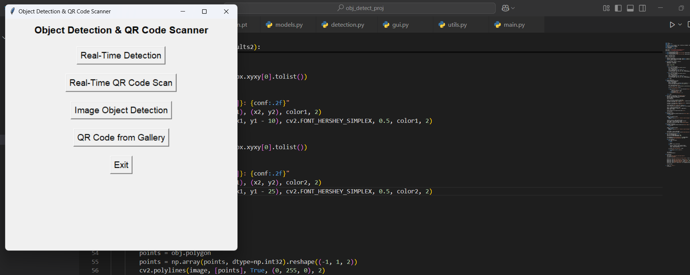
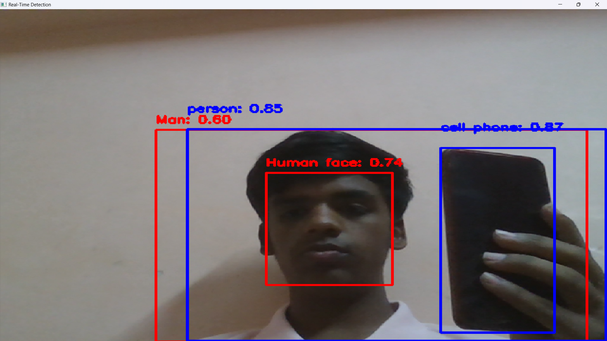
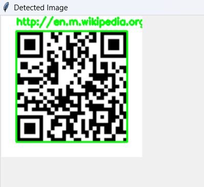

System Flow

A diploma project focused on real-time visual analysis using Python, OpenCV, TensorFlow-style detection workflows, and QR decoding for practical security and automation use cases.

The system follows a clear pipeline: frame capture, preprocessing, model inference, object label overlay, QR scan extraction, and result presentation through a simple execution interface.
Developed as a diploma project under the guidance of Prof. Biradar R.Y.
Screens from the object detection and QR decoding workflow.


